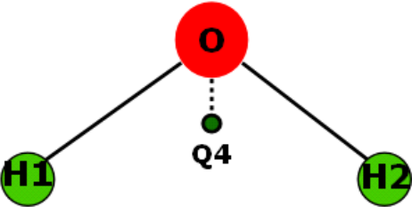
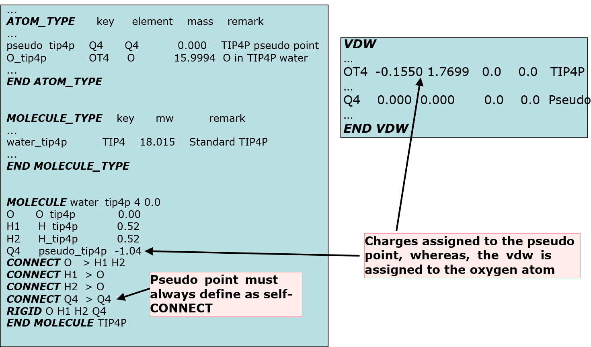

Pseudo points¶
In DL_FIELD, a pseudo point is an imaginary particle, either charged or uncharged, and can take any mass value or even the vdw interactions. Its position must be fixed relative to other atom or group of atoms within a MOLECULE. In other words, the RIGID statement must be used within the MOLECULE template.
Pseudo points are distinguished from normal atoms by using a two-character format in the form of QX, where X = 0 to 9 and A to V (case-sensitive). For example, Q1, Q2, QD are pseudo points.
Note
The symbols QW, QX, QY and QZ are pre-defined for DL_FIELD internal use only.
Pseudo point can be used in a number of scenerio. For example: change the polar behaviour of atoms and bonds, or presence of lone pairs.
Please take note of the following when using pseudo points:
- The pseudo ATOM_TYPEs is unique within a MOLECULE. This means if there are more than one pseudo points in a MOLECULE, each pseudo point must be assigned to a different ATOM_TYPE and ATOM_KEY. However, similar pseudo points can be used across different MOLECULEs.
- A RIGID statement must be used for pseudo points that contained at least one normal ATOM.
- Pseudo points must not be connected to any other ATOMs within the MOLECULE. A self-CONNECT directive must be used for a pseudo point.

For example, a pseudo point is used in the TIP4P model to improve dipole moment of the water molecule, by shifting the charge slightly away from the oxygen atom (an off-center point charge model):
{kind=link}
Below shows how to insert pseudo points into the model, extracted from a sf and par files in the library:
{kind=link}
Note also pseudo point ATOM_KEY must be used (as would be for any self-CONNECT species) in the input file as shown below.
REMARK TIP4P water model
ATOM 91600 O TIP4 2 -8.070 -6.529 -6.323 0.00 0.00 W1
ATOM 91601 H TIP4 2 -7.441 -5.976 -5.859 0.00 0.00 W1
ATOM 91602 H TIP4 2 -8.532 -5.930 -6.909 0.00 0.00 W1
ATOM 91603 Q4 TIP4 2 -8.048 -6.381 -6.339 0.00 0.00 W1
END